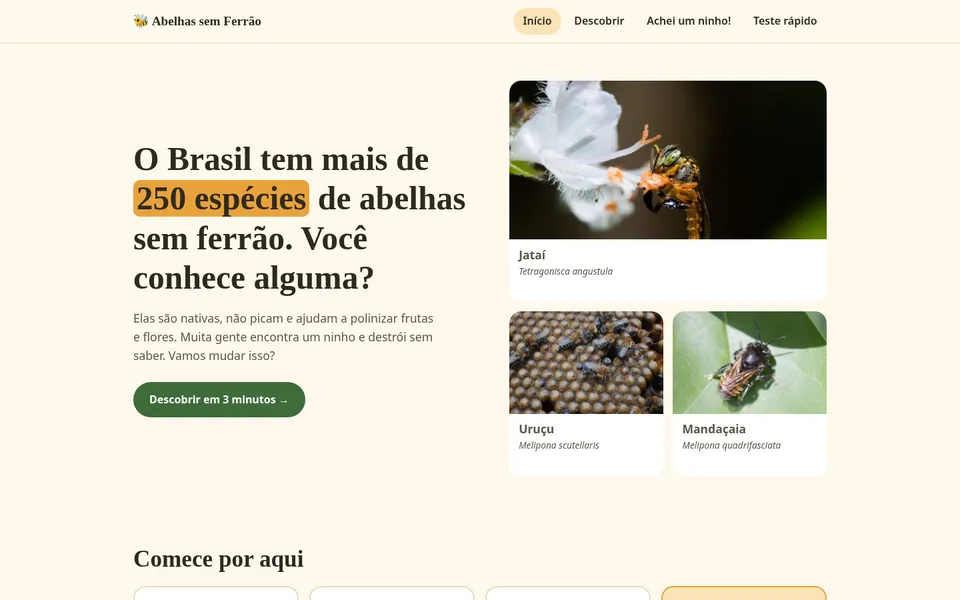

← All projects
Educational website
Abelhas sem Ferrão
For people who have never heard of Brazil's native stingless bees: a 3-minute tour, what to do if you find a nest and a quick quiz. It grew out of a Design Thinking exercise.

The challenge
In the Design Thinking exercise, the interview showed that many people find a native bee nest, assume the bees sting and destroy it. The site had to change that in a few minutes.
What was built
- A three-screen journey with a progress bar, for people who have never heard of stingless bees.
- Step-by-step help on what to do when you find a nest and how to ask for a rescue.
- A page for people who want to keep native bees at home, following the rules of meliponiculture.
- A five-question quiz that says in words whether the answer is right, not just with color.
Under the hood
- It started as a prototype in Lovable and was rebuilt from scratch in HTML, CSS and JavaScript.
- Focus moves to each screen’s heading and screen readers announce every change; the main text has 13.56:1 contrast.
- 13 languages, light and dark modes and free photos, each one credited.
Want something like this for your business?
Tell us what you do and what you have in mind. It can be just an idea: the reply comes with questions and next steps.